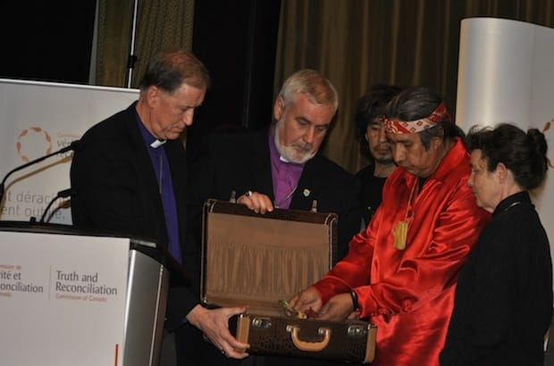

Government Policy, Families, and the Impact of Residential Schools
Residential schools in Canada
Residential schools in Canada, formerly termed Indian residential schools, represent a dark chapter in the country's history, marked by the systematic cultural assimilation and abuse of Indigenous children. These schools were part of a government-sponsored initiative, primarily from the late 19th century to the latter half of the 20th century, to assimilate Indigenous peoples into Euro-Canadian culture.
Tabs
The establishment of residential schools in Canada can be traced back to the 1870s when the federal government partnered with various Christian denominations to run these institutions. The idea was to assimilate Indigenous children into European culture, eradicate Indigenous languages, traditions, and spiritual practices, and accelerate their integration into mainstream Canadian society.
Residential schools were typically run by churches, including the Roman Catholic Church, Anglican Church, United Church of Canada, and others, in collaboration with the Canadian government. The schools were often located far from Indigenous communities, making it difficult for families to maintain regular contact with their children.
The effects of residential schools were devastating on Indigenous communities. Children were forcibly removed from their families and subjected to harsh discipline, physical and emotional abuse, neglect, and inadequate living conditions. The schools aimed to strip Indigenous children of their cultural identity, resulting in a loss of language, traditions, and spiritual practices for many survivors.
Numerous reports have documented widespread physical, sexual, and emotional abuse suffered by the students in these schools. Many survivors have shared their traumatic experiences, shedding light on the long-lasting impact on mental health and well-being. The abuse within these institutions has had intergenerational effects, affecting not only the survivors but also their families and communities.
In recognition of the historical wrongs committed through residential schools, the Canadian government officially apologized in 2008. The Truth and Reconciliation Commission (TRC) was subsequently established to uncover the truth about what happened in these schools, promote healing, and recommend actions for reconciliation. The TRC documented the experiences of survivors and provided a platform for them to share their stories.
The TRC issued 94 Calls to Action, addressing various aspects of Canadian society, including education, health, justice, and language, to foster reconciliation between Indigenous and non-Indigenous peoples. Implementation of these recommendations is an ongoing process, and progress is being monitored to address the historical and contemporary injustices faced by Indigenous communities.
The legacy of residential schools continues to affect Indigenous communities today. Healing and reconciliation efforts involve acknowledging the trauma, preserving and revitalizing Indigenous cultures, and promoting understanding and respect between Indigenous and non-Indigenous Canadians. Education and awareness play a crucial role in this process.
In conclusion, the history of residential schools in Canada is a painful and significant part of the country's past. Acknowledging this history, learning from it, and actively working towards reconciliation are essential steps in building a more just and inclusive society in Canada.
The History of Canadian Residential Schools
- Indigenous children were sent to residential schools funded by the Canadian government and often run by churches. The goal was to try to make Indigenous children more like children in mainstream society.
- Canadian residential schools were in operation from the mid-1800s to the mid-1900s. Although most schools were closed by 1960, the last Canadian residential school closed in Saskatchewan in 1998.
Take a look at the timeline of events that mark the history of Canadian residential schools.
To see where the Canadian residential schools used to operate, take a look at this interactive map.
.png)
What Happened in Canadian Residential Schools?
- The government promoted the positive benefits of Canadian residential schools with videos like the one below. However, you will learn the reality was far different than the propaganda, news stories, articles, and reports.
- Watch the Canadian Residential School Propaganda Video, 1955 in the next slide.
- As you know, early socialization is vital for the growth and development of children. However, Canadian residential schools had a tremendous impact on Indigenous children in many ways.
The Long-Term Impact and Legacy of Canadian Residential Schools
|
The impact of residential schools has had far-reaching consequences. Residential schools have disrupted socialization patterns, and this has impacted the family and child-rearing practices, as well as the broader culture and community. |
| In addition, the abuse and trauma suffered by victims have had a lasting impact on individuals, the family system, and the Indigenous culture and community. |
| Take a look at the following resources to examine the long-term impact of Canadian residential schools and their legacy of abuse and trauma. Complete this template to organize your information. You may also use search engines and databases to expand your understanding and information. |
Callout
Resources:
- Manitoba Trauma and Information and Education Centre: Residential Schools
- The Globe and Mail - “Residential schools linked to suicidal thoughts: Statscan”
- “Integrating Canadian Aboriginal Themes in Elementary Curriculum: Residential Schools”
Did You Know? - The Indian Residential Schools Settlement Agreement
- Canada has apologized for their treatment of Indigenous persons in their residential school system. However, the Indian Residential Schools Settlement Agreement is the largest class action lawsuit settlement in Canadian history.
For more information on what is being done to reconcile the damage caused by residential schools, please review the following resources:
Callout
Resources:
- Indian Residential Schools Settlement Agreement, The Canadian Encyclopedia
- The Truth and Reconciliation Commission of Canada
Terminology Throughout History
Throughout history, there have been many terms used to describe Indigenous persons.
Research the history, usage, and implications of each of the following terms:
- Indian
- Native
- First Nations
- Aboriginal
- Indigenous
My Little Residential School Suitcase
In 1958, when he was a six-year-old boy, Marcel Petiquay’s mother lovingly packed a small brown suitcase for him to take with him on his leave to a Canadian residential school. In 2007, recalling that suitcase, he wrote the following poem:
The first time I left for residential school,
my mother carefully prepared my
little suitcase. She took care to put in it everything
I would need. My clothes, some
toys I would never see again.
I was six years old on this first trip.
In my little suitcase, my mother had also put
all the love she had, without forgetting
the love from my father.
There were also embraces,
tenderness, respect, for me
and others, sharing, and many
other qualities she had taught me.
The trip lasted 12 years.
When I returned home, my
little suitcase was heavy. What my
mother had put in it was gone;
love embraces, all those beautiful
things had disappeared.
They had been replaced by hatred,
self-rejection, abuses of all
kinds (alcohol, drugs, sexual abuse),
violence, anger, and suicidal thoughts.
That is what I carried for
a long time, but I've been
cleaning out this suitcase.
I put back everything my mother had put in it
when I left the first time:
love, respect for myself and others, and a great
many other qualities.
Oh yes, added to this is sobriety and
especially spirituality.
My little suitcase is very light.
It is full of good things I can
Share with everyone
I meet along the way.
Regardless of skin color
white, red, black, yellow—we are all
human beings, we
are all God's creatures.
Marcel Petiquay (2007)
(Translated from French with permission of Marcel Petiquay, April 2013)
Marcel Petiquay, second from right, puts a copy of his poem and a medicine bundle in a suitcase as a gesture of healing and reconciliation as (L to R) Archbishop Fred Hiltz, Dennis Drainville, Harold Petiquay and the Rev. Cynthia Patterson look on.
Source: Marites N. Sison
True or False Activity: Residential Schools in Canada
True or False
True or False
True or False
True or False
True or False
True or False
True or False
True or False
True or False
True or False